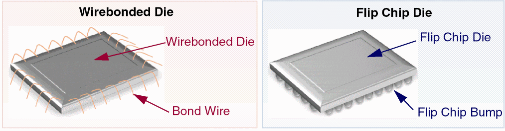

Dies in Virtuoso Multi-Technology Solution
Depending on the mode of attachment, the dies in the Virtuoso RF solution can be classified as wirebonded and flip chip dies, as described below.
- Wirebonded die: Uses bond wires to establish connections. Bond wires are connected to the die IO pads on one side and the bond wire endpoints or bond fingers on the other.
-
Flip chip die: Uses solder balls to establish connections. To connect the dies, solder balls are placed on the top metal layer or on the metal layer at the back. These solder balls and the metal pads beneath them are called bumps. Bumps that lie between a die and the package substrate are called flip chip bumps.

Wirebonded Dies
The key components of wirebonded dies are the following:
- Guides: Paths drawn around dies to define valid placement locations for bond wire endpoints and bond fingers.
- Bond wires: Wires, usually made of gold, that connect the die pads either to bond fingers on the component substrate or to die pads on another die.
-
Bond fingers: A metal pad on the outer layer of the component substrate to which a wire bond is attached. Bond fingers help establish electrical connections between the component substrate and the die.
Flip Chip Dies
For flip chip attachments, die instances on the package are flipped if the IO pads on the die are on the front-side of the IC and connected to the top of the package substrate. In addition, if they are being mirrored, they are connected to the bottom of the package substrate. If the die instance attaches to an internal layer in the package substrate (attachment in a cavity for instance), the layer offset must be specified.
Related Topics
Dies in Virtuoso Multi-Technology Solution
Return to top